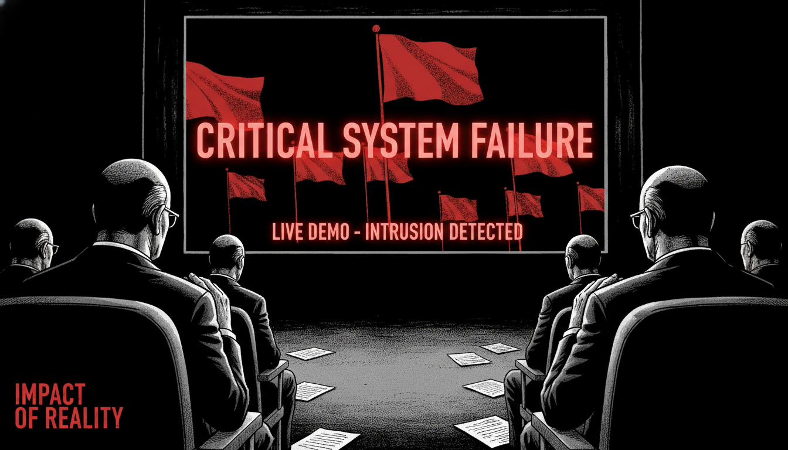

한 달 후. 서울 코엑스 컨벤션홀. '2024 전국 지자체 AI 혁신 사례 경진대회' 현수막이 걸렸다.
500명의 참석자가 앉아 있었다. 전국 243개 지자체 공무원들, 행안부 국장, 심사위원 5명.
민준은 대기실에서 노트북을 확인하고 있었다.
"과장님, 떨려요."
박소희가 어깨를 두드렸다.
"민준 씨, 여기까지 온 것만으로도 대단해요."
최태양 국장이 들어왔다.
"강 주무관, 청담구 발표 봤어요?"
"아직이요."
"이건우 과장이 발표하더라고. PPT 엄청 화려하던데."
오후 2시. 본회의장. 청담구 차례.
이건우가 단상에 올랐다. 정장에 명품 시계. 자신감 넘치는 표정.
"안녕하십니까. 청담구청 기획예산과 이건우입니다."
화면에 화려한 PPT가 떴다.
"저희 청담구는 5억 원을 투자하여 자체 AI 플랫폼을 개발했습니다."
화면이 전환됐다. 3D 그래픽, 애니메이션, 인포그래픽.
"민원 처리 시간을 50% 단축했고, 주민 만족도는 20% 향상됐습니다."
심사위원들이 고개를 끄덕였다.
이건우는 마지막 슬라이드를 보여줬다.
"저희 플랫폼은 청담구만의 독자적 기술입니다. 감사합니다."
박수. 5분간의 화려한 발표였다.
민준은 멍하니 화면을 바라봤다.
'저걸 어떻게 이겨...'
민준은 노트북을 열었다. 자신의 발표 자료.
PowerPoint 20장. 심플한 디자인. 3D 그래픽도, 애니메이션도 없었다.
"과장님, 저희 자료... 너무 초라한 거 아닌가요?"
박소희는 고개를 저었다.
"민준 씨, 우리한테는 청담구가 없는 게 있어요."
"뭔데요?"
"진짜 사람들이요."
박소희는 휴대폰을 보여줬다. 이순자 할머니 인터뷰 영상.
"이걸로 끝내요."
오후 3시. 구산구 차례.
민준이 단상에 올랐다. 심호흡.
"안녕하십니까. 구산구청 복지정책과 강민준입니다."
화면에 첫 슬라이드.
청중석에서 웅성거렸다.
"300만 원? 청담구 5억이었는데?"
민준은 침착하게 말을 이었다.
"저희는 기성 AI 도구를 활용했습니다. ChatGPT Plus, 월 2만 원. 10명이 1년 쓰면 240만 원입니다."
"여기에 Custom GPT 개발 비용 약 50만 원. 총 300만 원입니다."
심사위원 한 명이 손을 들었다.
"그렇게 저렴하게 어떻게 전국 1위를 했죠?"
민준은 다음 슬라이드를 넘겼다.
"실시간 시연으로 보여드리겠습니다."

민준은 노트북 화면을 공유했다. ChatGPT가 떴다.
"이건 저희가 만든 '구산구 복지 검증 봇'입니다."
민준은 실시간으로 테스트 데이터를 입력했다.
5초 후. 봇이 분석 결과를 출력했다.
청중석이 조용해졌다.
민준은 계속했다.
"이 봇은 AI 판단 과정을 투명하게 공개합니다. 왜 이 사람이 우선순위인지, 왜 재확인이 필요한지 설명합니다."
"그리고 오류 가능성이 높은 케이스는 자동으로 플래그를 달아 사람이 최종 확인합니다."
심사위원이 또 물었다.
"그래서 실제 성과는요?"
민준은 그래프를 보여줬다.
"수치로 증명됐습니다."
민준은 마지막 슬라이드를 열었다. 영상 재생 버튼.
이순자 할머니가 화면에 나왔다.
"저는 구산구에 50년 살았어요."
할머니의 목소리가 떨렸다.
"혼자 사는데... 아무도 찾아오지 않았어요. 아프면 누구한테 말해야 할지도 몰랐어요."
"그런데 구청에서 강민준 주무관님이 찾아오셨어요."
"지금은 일주일에 두 번 복지사 선생님이 오세요. 밥도 챙겨주시고, 병원도 같이 가주시고."
할머니가 울먹였다.
"저는... 이제 혼자가 아니에요."
영상이 끝났다. 회의장이 조용했다.
민준은 마이크를 잡았다.
"저희 구산구는 예산이 적었습니다. 화려한 플랫폼도 없었습니다."
"하지만 AI를 도구로 써서, 진짜 사람들을 찾아냈습니다."
"그게 저희 혁신입니다."
박수가 터졌다. 500명이 일어나 박수를 쳤다.
발표가 끝나고 질의응답.
심사위원 1번이 손을 들었다.
"강 주무관, 이 시스템을 다른 지자체도 쓸 수 있나요?"
민준은 고개를 끄덕였다.
"네. 저희는 이 시스템을 오픈소스로 공개할 예정입니다."
이건우의 얼굴이 굳었다.
"Custom GPT 설정 파일, 프롬프트 템플릿, 매뉴얼 전부 무료로 공개합니다."
심사위원 2번이 물었다.
"왜요? 구산구만 쓰면 경쟁력 아닌가요?"
민준은 웃었다.
"저희 목표는 경쟁력이 아니라 복지 사각지대를 줄이는 겁니다. 전국이 다 같이 좋아지면 되잖아요."
청중석에서 박수가 또 터졌다.
오후 5시. 시상식.
행안부 국장이 마이크를 잡았다.
"2024 전국 지자체 AI 혁신 사례 경진대회, 심사 결과를 발표하겠습니다."
"심사위원 5명 만장일치."
"대상: 구산구청."
민준은 믿기지 않았다. 박소희가 민준을 밀었다.
"민준 씨! 나가요!"
민준은 단상으로 걸어갔다. 트로피를 받았다.
청중석에서 구산구청 직원들이 환호했다. 최태양, 김철수, 윤서연.
민준은 트로피를 들어올렸다.
그 순간, 객석 한쪽에서 이건우가 일어나 나갔다.
시상식이 끝나고. 민준은 화장실로 가다가 복도에서 이건우와 마주쳤다.
"...과장님."
이건우는 민준을 노려봤다.
"강민준, 네가 이겼어."
"과장님..."
"하지만 알아둬. 청담구는 5억 투자했어. 너희는 300만 원. 규모가 달라."
민준은 고개를 저었다.
"과장님, 규모가 중요한 게 아니잖아요. 사람이 중요하죠."
이건우는 코웃음 쳤다.
"그래, 네가 옳아. 축하해."
이건우는 돌아서서 걸어갔다.
민준은 그 뒷모습을 바라봤다.
민준이 사용한 기술: ChatGPT로 프레젠테이션 만들기
문제 상황:
- 발표 자료 만들기 시간 소요 (디자인, 내용 정리)
- 데이터를 시각적으로 표현하기 어려움
- 청중 맞춤 메시지 구성 복잡
ChatGPT의 역할:
- **구조 설계**: 발표 순서 자동 구성
- **내용 정리**: 복잡한 데이터를 요약
- **시각화 가이드**: 어떤 차트를 쓸지 제안
비유:
- 일반 작업 = 백지에서 시작
- ChatGPT 활용 = 초안 받고 다듬기
필요 도구:
- ChatGPT (구조 + 내용)
- PowerPoint 또는 Google Slides (디자인)
- 엑셀 (데이터 정리)
작업 흐름:
민준의 프롬프트:
ChatGPT 응답:
개별 슬라이드 프롬프트:
ChatGPT 응답:
그래프 제작 요청:
ChatGPT 응답:
스크립트 생성 프롬프트:
ChatGPT 응답:
목적: 구의회 예산 승인 발표
목적: 신규 공무원 AI 교육
목적: 타 지자체 방문객 대상 설명
| 항목 | 발표 자료 (PPT) | 보고서 (문서) |
|------|----------------|-------------|
| 텍스트량 | 최소 (키워드만) | 많음 (상세) |
| 시각화 | 필수 | 선택 |
| 구조 | 단순 명확 | 복잡 OK |
| 목적 | 즉시 이해 | 참고 자료 |
ChatGPT 활용 차이:
- 발표: 구조 + 키워드 중심
- 보고서: 상세 설명 + 근거 중심
❌ ChatGPT가 못 하는 것:
1. 디자인 직접 생성: PPT 파일 만들기 (사람이 복붙)
2. 실시간 데이터 연동: 최신 통계 자동 업데이트
3. 발표 연습: 발표 스킬은 사람이 연습
✅ ChatGPT가 잘하는 것:
1. 구조 설계: 논리적 흐름
2. 내용 정리: 복잡한 데이터 요약
3. 스크립트: 발표 멘트 작성
4. 시각화 조언: 어떤 차트 쓸지 제안
Day 1 (3시간):
1. ChatGPT로 발표 구조 설계 (30분)
2. 슬라이드별 내용 작성 요청 (1시간)
3. PowerPoint에 복붙 + 디자인 (1시간)
4. 할머니 영상 편집 (30분)
Day 2 (1시간):
1. ChatGPT로 발표 스크립트 작성 (20분)
2. 연습 (40분)
총 소요: 4시간 (일반적으로 2~3일 걸리는 작업)
민준은 트로피를 바라봤습니다.
'구산구 AI 혁신 사례 - 대상'
6개월 전, 청담구에서 좌천당했을 때는 상상도 못 했습니다.
박소희가 다가왔습니다.
"민준 씨, 청담구 인사팀에서 연락 왔대요."
"...뭐래요?"
"복귀 제안이요. 그것도 승진 조건으로."
민준은 고개를 들었습니다.
다음 화에서 계속...